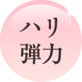

- 


-
水分バランスがキープされて乾燥やベタつきを感じなくなり化粧崩れの悩みも解消♪少し厚めに塗ってラップパックや、マッサージを週に2回。肌がワントーン明るくなりました！
-
育児に追われる毎日でも、洗顔後はこれ１本なので本当に助かります。内側からもっちり潤う感じ、ふわっと持ち上がるようなハリ「毛穴がキュッとなって、肌全体にハリが」翌朝のツルンとした透明感のある肌はやみつき♪
-
しっとり・もっちり・ハリが出てきて、肌の内側から潤う印象。目元の大きなシミが薄くなったかも？最初は乾燥対策に重ね塗りをしていましたが、今ではその必要もなくなりました♪
-
肌がどんどん柔らかくなっていきます。ごわつき、顔のコリがほぐれて、もっちり&しっとり。
-
１週間後にはシワが薄くなってる！ 心なしか透明感が出たような。エイジングケアに期待。
-
 エイジングケア成分が豊富だし、中身が空気に触れないエアレスボトルなのもポイントが高い。
エイジングケア成分が豊富だし、中身が空気に触れないエアレスボトルなのもポイントが高い。
![緊急REPORT ドクターの提言 医学博士 永井尚生 創傷治癒のち県をもとにした、特別なエイジング保湿を。傷を湿潤に保てば、創傷スピードは3倍にも。「美肌の基本は潤い」とはよく言われることですが、私たちはさらにダメージが進んだ肌にとっても、潤いが必要であるということに着目しました。それは、潤いを抱えこむチカラが衰えた大人の肌は、様々な刺激に敏感になり、ターンオーバーが乱れるということでそのダメージが定着しやすくなるから。リ・ダーマラボでは、刺激を与えることなく、ダメージから立て直すために適切な潤い補給のあり方を研究。参加しにくいエアレスボトルのオールインワンゲルにたどり着きました。しかも、オールインワンゲルにありがちな乾きやベタつきもなく、すべての女性が心地よく使える圧倒的な使用感の良さ。この１プッシュが、肌自らがうるおいをめぐらせ始めるスイチとなります。 今すぐ見直すべき！間違いスキンケアワースト３。ゴシゴシこすり過ぎ（手のひらを横滑りさせる動きはくすみ・たるみの原因。）、時間をかけすぎ（あれこれスペシャルケアするのもいいけれど、その際の摩擦ストレスの蓄積は見落としがち…。）、一回の使用量がすくなすぎ（適量以上でなじませること。春夏秋冬、朝晩、その時の肌状態に合わせて適宜、量をプラス。） １つでもあてはまったら、スキンケアを見直しましょう！](images/gel/banner-doctor.jpg)
![Q1 オールインワンゲルだけでは、物足りないことが多くて… A1 オールインワンゲルにもいろいろな商品があります。「モイストゲルプラス」は大人の肌悩みに特化しているため、感想やくすみ、ゆるみなど全方位ケアが可能。これまでのオールインワンに満足できなかった方にこそ、使っていただきたい商品です。 Q2春夏も秋冬もこれだけで本当に大丈夫？ A2 肌を健やかに保つために必要な成分は、すべてつまっています。だから、季節に応じてスペシャルケアを追加することなく、「モイストゲルプラス」の使用量を調節すればOKです。 Q3 全成分を教えて下さい。 A3 水・グリセリン・ＢＧ・セレブロシド・ダマスクバラ花水・ＤＰＧ・ラフィノース・１，２－ヘキサンジオール・スクワラン・ベタイン・ピリドキシンＨＣｌ・加水分解ヒアルロン酸・アセチルヒアルロン酸Ｎａ・リン酸アスコルビルＭｇ・ユビキノン・オリゴペプチド-34・オリゴペプチド-24・アセチルデカペプチド‐３・キネチン・オリゴペプチド-20・リシンＨＣｌ・グルタミン酸・グリシン・ロイシン・ヒスチジンＨＣｌ・セリン・バリン・アスパラギン酸Ｎａ・トレオニン・アラニン・イソロイシン・アラントイン・フェニルアラニン・グリコシルトレハロース・カルボマー・加水分解水添デンプン・ヒアルロン酸Ｎａ・プロリン・イザヨイバラエキス・ベニバナ花エキス・チロシン・イノシン酸２Ｎａ・グアニル酸２Ｎａ・テトラヘキシルデカン酸アスコルビル・ゲンチアナ根エキス・カプロオイルテトラペプチド－３・パルミチン酸レチノール（ビタミンA油）・アルギニン・水酸化Ｋ・ペンチレングリコール・グリチルリチン酸２Ｋ・キサンタンガム・タウリン・グリシン亜鉛・パンテノール・カプリリルグリコール・デキストラン。リ・ダーマラボは、商品の実力で応えるだけでなく、ご購入者さまからの肌についてのご相談・商品への質問に関して、医師自らメール回答するオンラインカウンセラーで万全のアフターケア体制を整えています。ぜひお気軽にご相談ください。※他社商品に関するご質問やご相談などお答えできないものもございます。予めご了承ください。](images/gel/banner-QA.jpg)